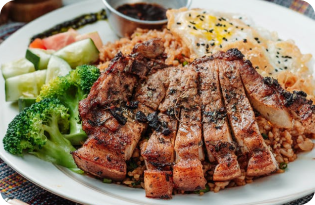

Steaked Meat and Lettuce
A steak is a meat generally sliced across the muscle fibers, potentially including a bone. It is usually grilled, though can be pan-fried
Ingredients
Beef
700g
Lettuce
400g
Curry, Thyme
1 Teaspoon
Salt
1/2 Teaspoon
Grinded Fresh Pepper
200g
Butter
360g
Procedures
By throwing on the steak when the coals are hot, you have already made the first steps to a perfectly prepared steakhouse special. Cook the steak on each side based on how well you want it prepared. We suggest topping this dish off with butter and serving it with a side of Gouda Mac-N-Cheese as a side that is sure to blow your guests away.